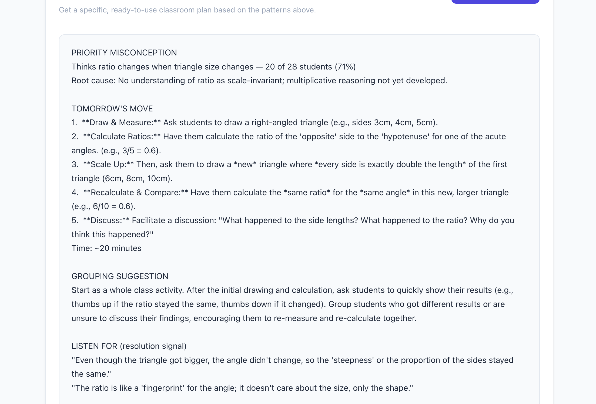
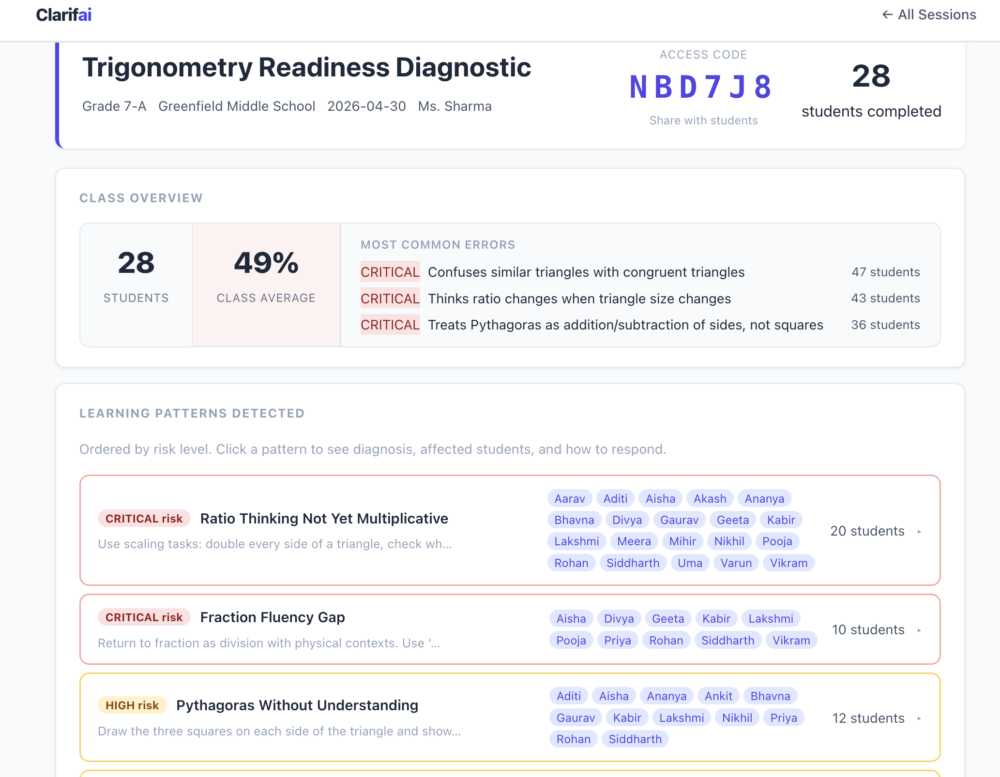

When I was a fellow with Teach For India, one of my least favourite deliverables was the diagnostic assessment. The intent behind it was good — give teachers a baseline gauge of where their classroom is before diving into new material. The execution was brutal. Hand-grade the papers. Enter scores into a Google Sheet, one student at a time. By the time you've processed everything, a week has passed and you've already started teaching the next unit.
And even then, the data didn't tell you much. A diagnostic that tries to cover an entire year of material in 15 questions can tell you that half your class struggles with electricity. It can't tell you why. Is it formula rearrangement? Formula recollection? Basic arithmetic? Or do they genuinely not have a mental model for what current is? That's the difference between four completely different interventions — and the diagnostic just said "7/15."
So I'd figure it out the slow way. Through follow-up lessons, class discussions, one-on-one conversations. By the time I'd pinpointed the actual misconception, weeks had passed and the class had moved on.
I wanted to build a tool that could close that gap.
The First Version Was Wrong
My initial idea was a platform that could diagnose specific misconceptions and then put students in front of an AI tutor — a Socratic chatbot that would ask questions rather than give answers, helping students work through their misunderstandings one-on-one.
It worked reasonably well in controlled testing. Then I thought seriously about what would actually happen in a real classroom — my classroom, in Ahmedabad, with 32 kids and 40-minute periods — and the model fell apart.
I didn't have to imagine very hard. Khan Academy just lived this experiment at massive scale, and it failed. Khanmigo, their AI tutor, launched in 2023 with a prediction from Sal Khan that it would drive "probably the biggest positive transformation that education has ever seen." Three years and millions of dollars later, Khan himself called it "a non-event" for most students. "They just didn't use it much," he told Chalkbeat a few weeks ago. A geometry teacher whose school piloted Khanmigo stopped using it because her students "didn't really care for the bot." Khan Academy's Chief Academic Officer said: "So far I am not seeing the revolution in education."
The pattern was consistent: students who were already motivated used it; students who were struggling — the ones who needed it most — didn't seek it out. Khan's own analogy was telling: imagine he walked into a classroom, sat in the back, and waited for students to come ask for help. "Some will; most won't."
This confirmed something I'd felt building my own tutor. The problem isn't that students lack access to explanations. The problem is that the teacher — the person standing in front of 32 students with 40 minutes — often has the instinct for what's wrong but not the specific data or the concrete plan to act on it. That's where the leverage is.
What Diagnostic Data Should Actually Look Like
Most diagnostic tools give teachers a score. 58% class average. Kavya got 12/15. Arjun got 7/15.
That's not diagnostic data. That's a leaderboard.
When I redesigned the assessment tool, I mapped every wrong answer option to a specific, named misconception. Not just "incorrect" — but this incorrect, for this reason.
Take an Ohm's Law question. A student who picks the wrong answer could be wrong in several distinct ways:
- They think voltage and current are the same quantity.
- They can apply V=IR when solving for V but can't rearrange it for I or R.
- They understand the formula mechanically but have no physical model for what resistance actually means.
- They get isolated formula problems right but fall apart when they see a multi-component circuit.
Each of these requires a completely different intervention. Grouping them all under "needs more practice with Ohm's Law" is noise, not signal.
The assessment detects these patterns across the whole class. After 30 students submit, the dashboard doesn't show a grade distribution — it shows which misconception clusters are present, how many students fall into each, and what the root causes are.
The Pivot
So I stopped building for the student and started building for the teacher.
The insight came from a conversation with a co-fellow who's still teaching. Teachers have access to a lot of student data. The bottleneck isn't information — it's capacity. Knowing that 12 students confuse voltage with resistance doesn't help if you don't have a plan for what to do about it in tomorrow's 40-minute period, while also keeping the other 20 students engaged.
That's what the co-pilot does. It takes the class diagnostic data — the actual misconception patterns, not just scores — and generates a specific, ready-to-use classroom plan:
- The priority misconception, with its root cause in plain language and how many students are affected.
- A concrete classroom move for tomorrow — not "reteach the concept" but a specific question to pose, a specific activity to run, with a time estimate. For example: the water pipe analogy for voltage vs. current, structured as a 15-minute individual-then-group activity.
- A grouping suggestion based on the data — not generic "pair strong with weak" but a feasible approach given what the diagnostic revealed about which students understand what.
- Resolution signals — one thing to listen for that means the misconception is resolving, one thing that means it isn't. So the teacher knows in real-time whether the intervention is working.
- Follow-up problems — one to expose the gap, one to confirm resolution.

A co-pilot plan: priority misconception, tomorrow's activity with time estimate, grouping suggestion, and what to listen for.
The key constraint: the co-pilot cannot give generic advice. Every suggestion has to name the specific misconception, the specific task, and why that task targets the root cause rather than the symptom. It can do this because it has the diagnostic data. That's what makes it different from asking ChatGPT for lesson planning help.
And it's conversational. After the initial plan, the teacher can push back: "I only have 15 minutes." "That analogy won't land with my students." "How do I handle this if half the class was absent for the first lesson?" The co-pilot adjusts because it still has the full class context.
The Bet Underneath
The test subject — electricity, trigonometry, fractions — is almost secondary. What I'm really trying to catch are conceptual gaps that travel across subjects and years.
A student who hasn't developed multiplicative reasoning about ratios will struggle in chemistry, physics, and every quantitative subject that follows. A student who thinks current gets "used up" as it flows through a circuit will never correctly reason about Kirchhoff's laws, no matter how many practice problems they do. A student who doesn't understand why sin 30° is a fixed number regardless of triangle size — because it's a ratio, and ratios are scale-invariant — will memorize trig tables and fail the moment the problem changes shape. These aren't electricity problems or trig problems. They're foundational misconceptions that compound. The diagnostic is just the instrument that makes them visible early enough to do something about it.
Where It Is Now
Clarifai is live. A teacher can create a session, share a code, and have students take a diagnostic on their phones. The dashboard surfaces misconception patterns in real time. The co-pilot generates intervention plans grounded in the actual class data.

The dashboard after 28 students complete the diagnostic — misconception clusters ranked by risk, each with affected students listed.
It currently covers Electricity (Grade 9), Trig Prerequisites (Grade 10), and six Grade 8 NCERT math topics — Linear Equations, Algebraic Expressions, Ratios & Proportions, Simple Interest, Triangles, and Quadrilaterals.
In June, I'm piloting it with a class of Grade 9 students through a Teach For India connection. The question I care most about isn't whether the AI can generate a plan. It's whether the plan is good enough that a teacher would actually use it — and whether students' specific misconceptions actually resolve when they do.
If you're a teacher, a school leader, or someone who works in education and this resonates — I'd love to hear from you. Try the demo. Tell me what's missing. Tell me what would make this actually useful in your classroom.